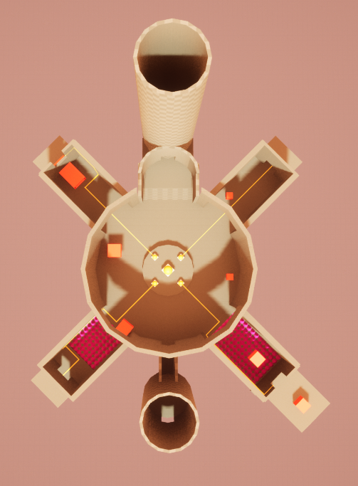

Game and Level Concept: Magnesis
Magnesis is a game concept from 2023 for a 3D Puzzle Platformer built within Unreal Engine 5. The game revolves around the players ability to control metal in their environment, the power of Magnesis. This ability takes inspiration from The Legend of Zelda: Breath of the Wild’s ability of the same name, yet this concept adds more movement and physics based interactions that can be used to create a wider variety of puzzles. The following document goes into the pitch document for the proposed first level of the game which introduces the player to the magnesis ability.
Summary
Level revolves around teaching the mechanic of Magnesis, the players ability to latch onto metal objects and either move them around if they are lighter than the player, or hook shot over to them and if they are heavier than the player, or locked in place. Goal of the level is to hit four yellow switches in 4 different puzzle rooms to activate the door to the next level. The main hub area connects the start, puzzle rooms, and the exit. Progression is indicated by the 4 lights positioned in the center of the main hub, once all are lit up, the central light will light up and the door to the goal tower will open.
Branching Paths
While the desired effect was to give the players the illusion that they can pick and choose where they can go, I still wanted to have them lean towards a certain order in which they explore each path. Each path will have a series of small challenges that ramp up in difficulty and will teach a player about a new mechanic and/or movement strategy. These are then reintroduced in the main hub to allow the player to use their new found knowledge to get to a new path. However, these hub challenges are not blocked off for any portion of the level, meaning that if a player already understands one of these mechanics or wants to try and learn with one of these harder challengers, they are more than welcomed to explore the paths out of order. This achieves the main idea of having a more open ended experience of having a player learn and explore at their own pace, while still having a clear way forward if the player gets stuck on a challenge.Map Overview

Main Hub
The main hub is the circular room at the center of the map. It serves as a junction between the start, the end, and all of the puzzle halls that the player must explore before completing the level. While the player is allowed to explore at their own pace, the challenges in each of the branching halls encourages a specific order in which to explore. Three out of four of the hall entrances have challenges that test the players skill on how to use the main mechanics of the game. These skills are taught in other rooms, however if the player understands the puzzles in the main hall, or if they want to try and learn the mechanics in a harder setting, they are more than welcomed to explore out of order. This philosophy is taken from many Metroid-vania style games where many blocked off paths are shown and not able to be passed until the player gains new knowledge or abilities.
The overall shape of the area has been inspired by Christopher Alexanders principle of Good Shape, having many natural occurring shapes joined together at a central point. From a birds eye view the hub takes on a leaf like shape, modeled after the growth shown in model B. The end goal is placed at the top of the hub and the small entrance at the bottom to mimic their respective importance in relation to progression.
Gameplay Elements
Magnetic Blocks
Magnetic blocks are objects that can be latched onto with the magnesis power. Blocks that are lighter than the player can be moved around, while blocks that are heaver allow the player to fly towards it and hold onto it. Some blocks are hollow and are lighter, and some can only be moved along a rail. All magnetic blocks have a red coloration.
Magnetic Catapult
These structures have a magnetic point at their top that can be latched onto with the magnesis power. These points will always draw the player to it and cannot be moved around. Unlike a magnetic block, catapult points do not have collision, allowing the player to be slung forward with the momentum from the launch.
Lights and Switches
Switches are used to activate elements they are connected to. Lights are used to indicate the active state of a switch or an object
Spikes
Hazards that poke out of a surface that cause damage to the player on impact.
Object Rails
Object Rails are thin orange rails that have magnetic objects connected to them. The player can latch on to the magnetic block to move it around along the rail, but the object cannot be disconnected from the rail.
Strong Center
Similar to Good Shape, this area is designed to be a center that you come back to time and time again as you complete the trials in each branch. Within this center is another center that represents your progress. The raised platform in the center of the circular room has the 4 lights that indicate you progress within the level, and once all 4 are lit up, the large light in the center will then turn on and the path forward will open.Good Shape
Like stated above, the new main hub was designed to have Christopher Alexanders principle of Good Shape in mind. The hub was designed to have a natural, leaf like shape in mind to not only facilitate the hub and spoke system branching from the center point, but to also give a more natural shape to the whole area. This is supposed to be a ruined temple overtaken by nature, so the area is designed to mimic shapes that naturally occur within nature.Deep Interlock
All the branching paths connect back to the center, not only in a physical way, but in terms of the content, features and mechanics as well. Each path offers a look into a mechanic that is also present and expanded upon in the main central hub area as well. The goal is that by exploring the different paths, you will learn mechanics that will teach the player how to access the other paths back in the main hub.Enrichment within the Hub
Within the main hub there are different objects the player can interact with and move around. These serve to be objects of experimentation to help the player better learn the mechanics and test out different ideas in a safe environment. The player is also able to use these items within the different challenges in the hub, some may be required and some may lead to unconventional problem solving. This is all to help encourage the player to think creatively with what is available to them and use the mechanics in interesting ways.Map of Intended Path
Map of Attraction
Development and Prototypes
Level Version 1


Level Version 2
Experimentation began with having objects in the main hub that could be arranged in ways that would allow the player to access door ways into the challenge rooms. The idea was that after going into a challenge room, learning the mechanics, and returning, the player would see the objects in a new way that would lead them to a solution to get to the next room. This however made the room feel cramped and cluttered in concept, so in the second version of the hub, the idea of having branching halls that lead to the challenge rooms was implemented.
These halls helped give proper area for these entrance challenges and gave the room a whole new personality. Like stated earlier, the main inspiration for this new hub was Christopher Alexanders principle of Good Shape and the natural formation of leaves in nature. With this I modeled the final version of the hub shown below.
Puzzle Exploration
These are a few examples of how I brain stormed some of the puzzles and how could the mechanics and level elements could be combined to overcome obstacles in the level. While some of these sketches are very basic and most didn't end up in the current level, they have still been a great source of inspiration and knowledge. I feel like with how wide the possibilities are with the use of the games main mechanic can be, it is good to think of as many different ways the player can use it, even in very simple ways. Experimenting lead me to thinking of some out of the box ways that these puzzles can be over come and even led to new ones, which leads to a much more expressive gameplay experience.